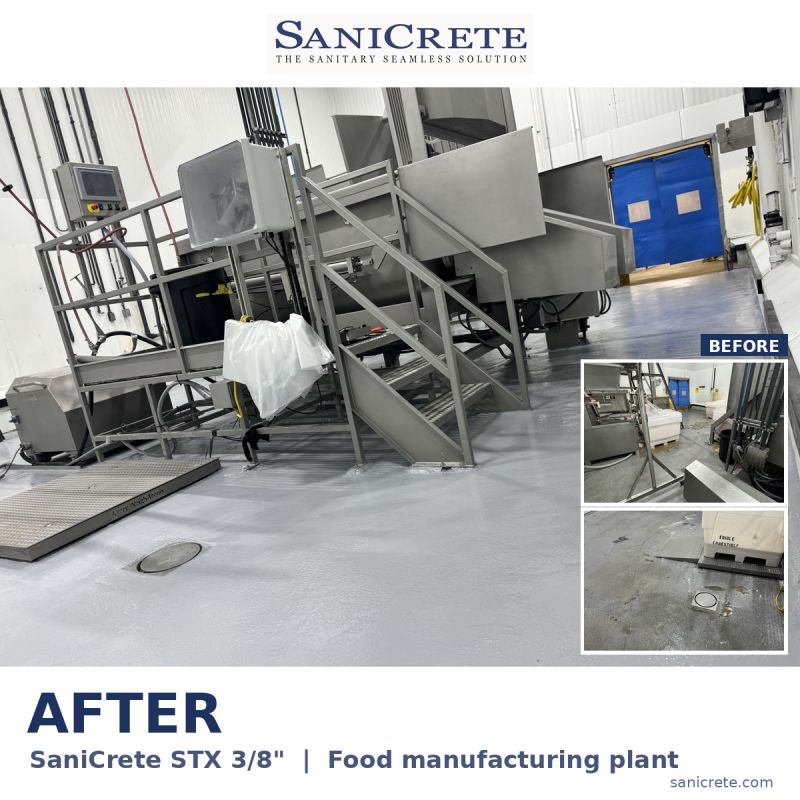

Not every SaniCrete STX floor needs a topcoat. A cementitious urethane system can do a lot of work on its own when it is matched to the room, the traffic, the cleaning routine, and the temperatures the floor has to live with.
But sometimes the right answer is STX with a sealed finish. This project was in a food manufacturing plant, and the system was SaniCrete STX at 3/8 inch, sealed with SaniCoat. The result was still seamless and sanitary, with a finish that looked sharp and fit the way the plant needed to use the space.

The Topcoat Is a Spec Decision
A topcoat should not be treated like a default line item. It should solve something. The answer depends on what the room does every day and what the plant expects from the floor after the crew leaves.
Some rooms need the toughness and thermal shock resistance of a cementitious urethane system without another finish layer. Other rooms call for a sealed surface because of the way the floor will be cleaned, the way traffic moves through the area, or the finish the owner wants to maintain. Both can be right. The point is to make the choice on purpose.
That is why we talk through process, budget, cleaning, traffic, and expectations before we settle on the finish. The same food manufacturing facility can have different flooring needs from one room to the next. The floor in a wet processing area does not ask for the same thing as a dry support area, and neither one should be guessed at from a generic spec.
Seamless Still Comes First
The topcoat changed the finish, but the base of the system still mattered most. STX gives the plant a seamless cementitious urethane floor. That means no tile joints, no loose grout lines, and fewer places for water and soil to sit after sanitation.
For food plants, that is the main point. A floor has to survive the work, but it also has to clean up well. If the surface looks good on day one but fights the sanitation crew every night, it is not doing its job.
This project kept the practical part first: a sanitary floor system, sealed for the finish the plant wanted, and specified to fit the process and budget instead of forcing one answer into every room.
That is the difference between picking a coating and building a floor system. The finish is one part of a larger sanitary detail.
Need Help Choosing the Finish?
Tell us about your floor. We can help sort through STX, SaniCoat, and the rest of the system details so the finished floor matches the room instead of just matching a product sheet.